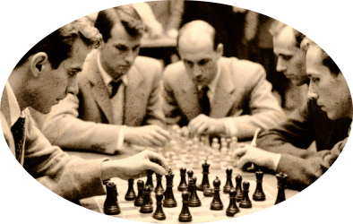
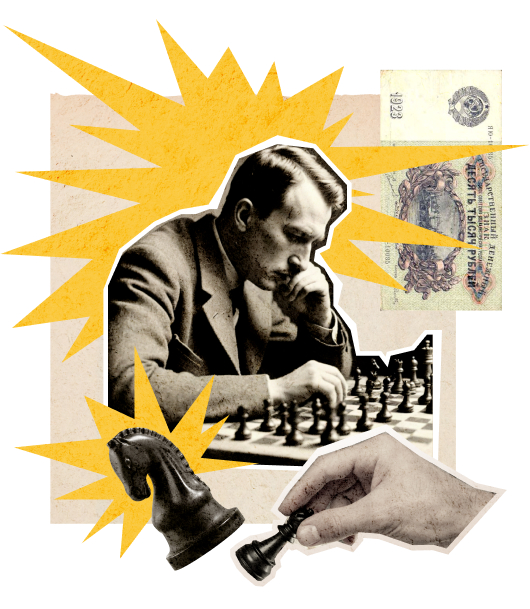

Клуб четырёх коней
Превратитеуездный город
в столицу
земного шара Оплатите взнос на телеграммы для организации Международного васюкинского турнира по шахматам
Дело помощи утопающим — дело рук самих утопающих!
Шахматы двигают вперед не только культуру, но и экономику!
Лед тронулся, господа присяжные заседатели!
Чтобы поддержать
Международный васюкинский турнир посетите лекцию на тему: «Плодотворная дебютная идея»


и Сеанс одновременной игры в шахматы на 160 досках гроссмейстера О. Бендера
| Место проведения: | Клуб «Картонажник» |
| Дата и время мероприятия: | 22 июня 1927 г. в 18:00 |
| Стоимость входных билетов: | 20 коп. |
| Плата за игру: | 50 коп. |
| Взнос на телеграммы: |
Этапы преображения
Васюков
Будущие источникиобогащения васюкинцев
- Строительство железнодорожной магистрали Москва-Васюки
- Открытие фешенебельной гостиницы «Проходная пешка» и других небоскрёбов
- Поднятие сельского хозяйства в радиусе на тысячу километров: производство овощей, фруктов, икры, шоколадных конфет
- Строительство дворца для турнира
- Размещение гаражей для гостевого автотранспорта
- Постройка сверхмощной радиостанции для передачи всему миру сенсационных результатов
- Создание аэропорта «Большие Васюки» с регулярным отправлением почтовых самолётов и дирижаблей во все концы света, включая Лос-Анжелос и Мельбурн
Участники турнира
1 / 6